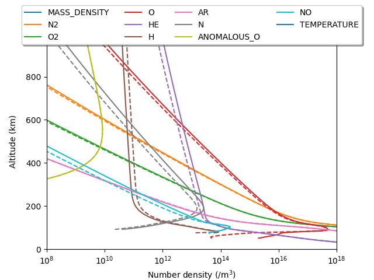

Note
Go to the end to download the full example code
Altitude profiles#
This example demonstrates how to calculate the altitude variations at a single location. Additionally, we show the difference between densities at noon (solid) and midnight (dashed).
import matplotlib.pyplot as plt
import numpy as np
from pymsis import msis
lon = 0
lat = 70
alts = np.linspace(0, 1000, 1000)
f107 = 150
f107a = 150
ap = 7
aps = [[ap] * 7]
date = np.datetime64("2003-01-01T00:00")
output_midnight = msis.run(date, lon, lat, alts, f107, f107a, aps)
date = np.datetime64("2003-01-01T12:00")
output_noon = msis.run(date, lon, lat, alts, f107, f107a, aps)
# output is now of the shape (1, 1, 1, 1000, 11)
# Get rid of the single dimensions
output_midnight = np.squeeze(output_midnight)
output_noon = np.squeeze(output_noon)
variables = [
"Total mass density",
"N2",
"O2",
"O",
"He",
"H",
"Ar",
"N",
"Anomalous O",
"NO",
"Temperature",
]
_, ax = plt.subplots()
for i, label in enumerate(variables):
if label in ("NO", "Total mass density", "Temperature"):
# There is currently no NO data, also ignore non-number densities
continue
(line,) = ax.plot(output_midnight[:, i], alts, linestyle="--")
ax.plot(output_noon[:, i], alts, c=line.get_color(), label=label)
ax.legend(
loc="upper center", bbox_to_anchor=(0.5, 1.15), fancybox=True, shadow=True, ncol=4
)
ax.set_title(f"Longitude: {lon}, Latitude: {lat}")
ax.set_xscale("log")
ax.set_xlim(1e8, 1e18)
ax.set_ylim(0, 1000)
ax.set_xlabel("Number density (/m$^3$)")
ax.set_ylabel("Altitude (km)")
plt.show()
Total running time of the script: (0 minutes 0.205 seconds)